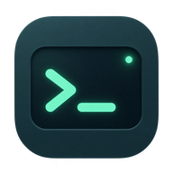
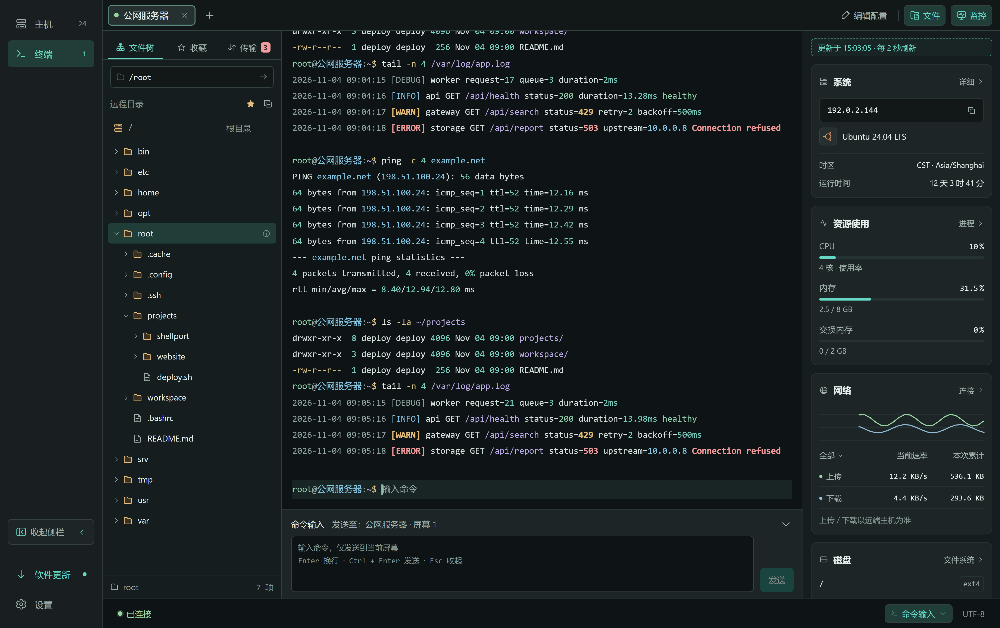
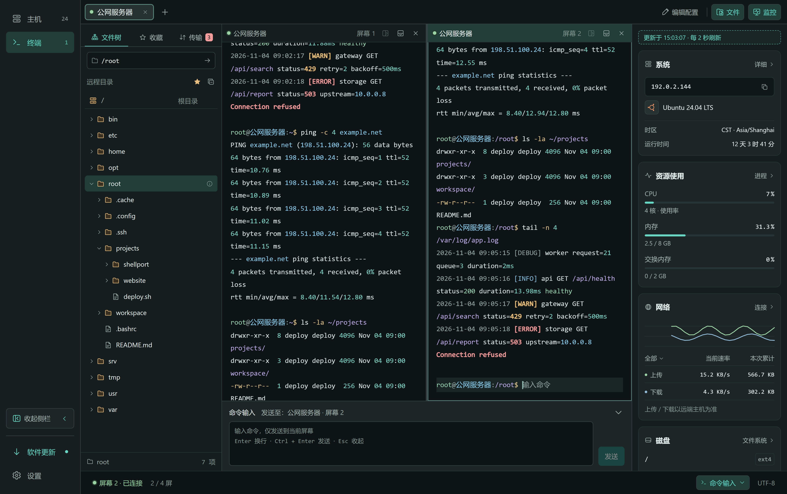
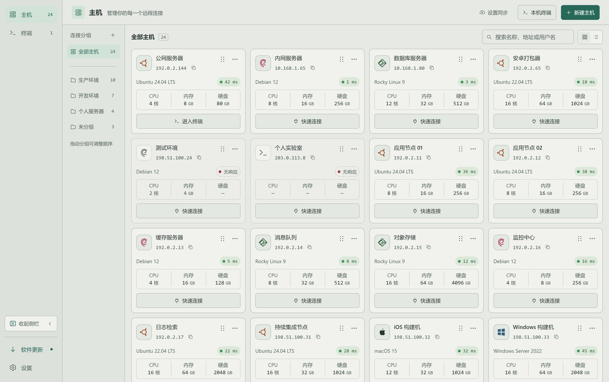

主机井井有条
按生产、开发或个人用途分组，搜索主机名称、地址或用户名。支持密码与私钥认证，找到主机即可连接。
分组管理 / 快速搜索 / SSH 连接
ShellPortYOUR NEXT SSH WORKSPACE
终端、文件、系统监控。
把远程工作的常用工具，
放进一个顺手的工作空间。

01 / 日常所需，放在一起
查看日志、调整配置、传输文件、观察资源。
让这些连贯的操作，留在同一个工作空间。
按生产、开发或个人用途分组，搜索主机名称、地址或用户名。支持密码与私钥认证，找到主机即可连接。
分组管理 / 快速搜索 / SSH 连接用标签切换连接，用横向或纵向分屏并排操作。查找终端输出，也能随时打开本机终端。
多标签 / 终端分屏 / 输出查找通过 SFTP 浏览目录、上传下载、收藏常用路径。需要修改配置时，直接打开远程文本文件编辑。
文件树 / 传输任务 / 文本编辑在终端旁关注 CPU、内存、网络与磁盘，进一步查看进程、连接和文件系统。可用指标取决于目标系统及权限。
资源趋势 / 进程信息 / 系统详情本地备份便于导出与导入，也能连接自己的 WebDAV 服务，同步所选配置、管理云端备份。
本地备份 / WebDAV / 范围选择深色与浅色主题，搭配可调整的终端字体和快捷键。应用内检查与下载更新，让工作空间持续改进。
深浅外观 / 字体设置 / 应用更新02 / 给工作留出空间
一边看日志，一边执行命令。
分屏各自操作，文件与监控持续可见。

换一种光线，继续专注
从主机管理到终端操作，
选择适合你工作环境的外观。

03 / 准备好，连接下一台
前往 GitHub Releases 下载最新版本，
根据系统与处理器选择对应附件。
Apple Silicon 与 Intel 均可使用。
选择 .dmg，打开后拖入“应用程序”。
在“关于本机”中确认芯片型号。
提供安装版与 ZIP 免安装版。
选择 -setup.exe 安装，或解压 .zip 使用。
在系统设置的“系统信息”中确认系统类型。
安装前请留意当前发布包尚未完成 macOS Developer ID 签名与 Apple 公证，Windows 包未签名，首次打开可能出现系统安全提示。签名状态、系统要求与安装说明以对应 Release 为准；附件中的 SHA256SUMS.txt 提供安装包校验值。
THREE STEPS TO YOUR WORKSPACE
填写地址、端口、用户名与认证信息。
打开终端，按需展开文件与监控。
分组管理主机，按需备份或同步配置。
不需要。你可以直接添加主机和使用终端。WebDAV 同步为可选功能，需要时再连接自己的服务并选择同步范围。
可以。从主机页选择“本机终端”即可打开，无需创建 SSH 主机。远程服务器仍通过 SSH 连接。
不会。本机保存的 SSH 私钥不包含在本地导出或云同步中，换设备后需要重新提供。登录密码是否纳入备份或同步取决于你选择的范围；备份包含主机地址等配置信息，请妥善保管。
历史版本、更新内容和对应安装包可在 Releases 查看。遇到问题或有新的建议，也欢迎通过 GitHub 反馈。
请提供系统版本、处理器架构、ShellPort 版本、复现步骤、预期与实际结果。可以附上截图或脱敏日志，请勿上传密码、私钥、数据库、本机密钥文件或未经脱敏的日志。